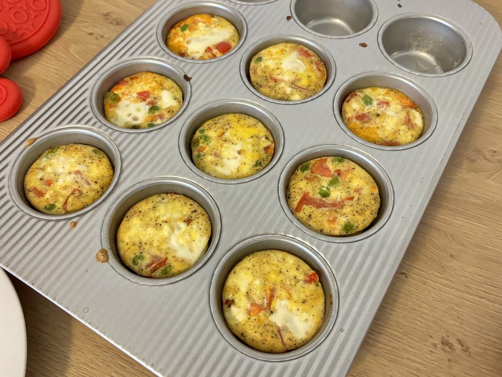

Based on https://sallysbakingaddiction.com/egg-muffins-recipe
Personal rating: 5 / 5

8 large eggs
1/3 cup (80ml) whole milk, half-and-half, or nondairy milk
1/4 tsp salt
1/4 tsp freshly ground black pepper
1/4 tsp onion powder
1/4 tsp garlic powder
3/4 cup (120g) bell pepper (any color), finely chopped
1/2 cup (75g) tomatoes, finely chopped
1/2 cup (15g) fresh spinach (or kale), finely chopped (or peas)
3/4 cup (100g) feta cheese, crumbled
(Optional for garnish) chopped parsley or chives, grated Parmesan cheese, red pepper flakes, hot sauce, etc.
Preheat oven to 375F and grease a 12-count muffin tray with butter or spray
In a medium bowl, preferably one with a pour spout, whisk together the eggs, milk, salt, pepper, onion powder, and garlic powder just until combined. Try not to over-mix, or too much air will be incorporated. You will have about 2 cups
Spoon the chopped bell pepper, spinach, and/or other add-ins into each greased muffin cup—about 2 Tbsp in each. Spoon 1 Tbsp of cheese on top of each
Pour the egg mixture into each muffin cup, filling about 3/4 full (just over the top of the add-ins and cheese)
Bake for 18–20 minutes or until puffy and golden brown around the edges
Remove from the oven and cool in the pan for 5 minutes. The muffins deflate as they cool
Serve, refrigerate, or freeze!